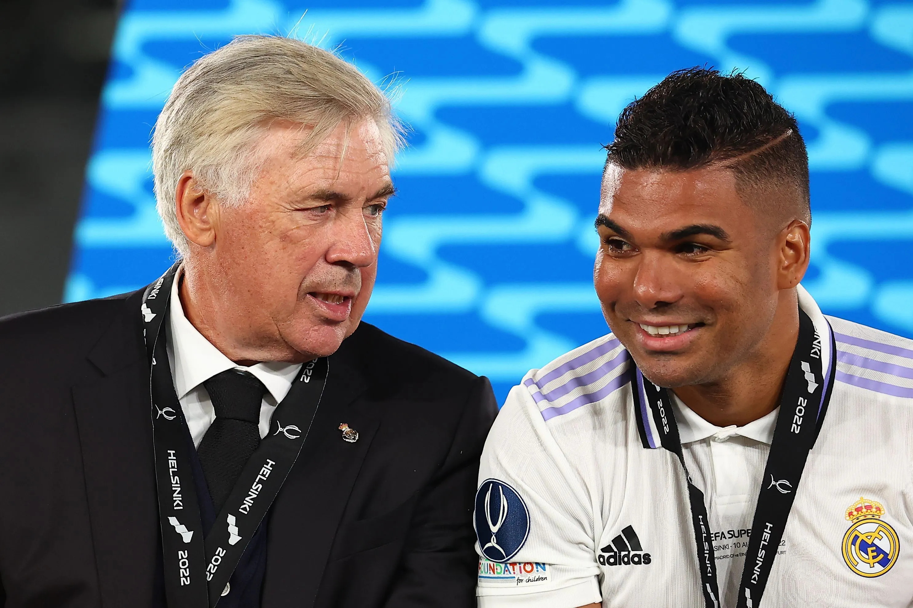
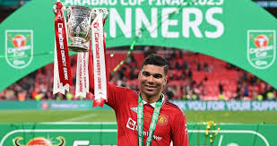
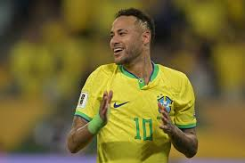

Ancelotti convoca Casemiro e deixa Neymar e Rodrygo de fora
O técnico italiano Carlo Ancelotti deu início à sua trajetória no comando da Seleção Brasileira com uma convocação marcada por decisões impactantes. Na lista divulgada em 26 de maio, visando os confrontos contra Equador e Paraguai pelas Eliminatórias da Copa do Mundo de 2026, destacam-se o retorno do volante Casemiro e as ausências de Neymar e Rodrygo.
Casemiro de volta: liderança e experiência no meio-campo
Após um período afastado das convocações, Casemiro retorna à Seleção sob a confiança de Ancelotti, com quem trabalhou no Real Madrid. O treinador destacou a importância do volante como líder e referência no meio-campo, ressaltando sua experiência e capacidade de organização tática.
Neymar fora por precaução física
A ausência de Neymar gerou questionamentos, mas Ancelotti esclareceu que a decisão foi baseada em critérios físicos. O atacante, que retornou recentemente de lesão e tem atuado pelo Santos, ainda não está em plena forma. O técnico afirmou ter conversado com o jogador antes da convocação e garantiu que conta com ele para o futuro da equipe.
Rodrygo ausente por decisão conjunta
Rodrygo, destaque do Real Madrid, também ficou de fora da lista. Segundo informações, o próprio jogador solicitou não ser convocado neste momento, visando uma recuperação física e mental após uma temporada intensa. Ancelotti respeitou a decisão, indicando que o atacante segue nos planos para futuras convocações.
Novidades e apostas na juventude
A convocação trouxe surpresas, como a inclusão do jovem Estêvão, do Palmeiras, e o retorno de jogadores como Antony e Richarlison. Ancelotti demonstrou interesse em mesclar juventude e experiência, visando uma renovação gradual da equipe.
Próximos desafios
O Brasil enfrentará o Equador em Guayaquil no dia 5 de junho e, posteriormente, o Paraguai em casa. Atualmente, a Seleção ocupa a quarta posição nas Eliminatórias, com 21 pontos em 14 jogos. Ancelotti busca consolidar sua filosofia de trabalho e garantir a classificação para o Mundial de 2026.
Com decisões ousadas e foco na construção de uma equipe equilibrada, Ancelotti inicia sua jornada à frente da Seleção Brasileira, buscando resgatar o protagonismo e a competitividade do time nacional.